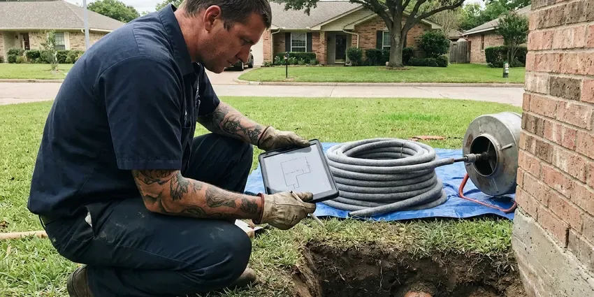

Septic Tank Repair in Bennington, VT
High water alarm going off? We repair floats, pumps and control panels in Bennington, VT, often on the first visit.
- Prices Before Digging
- Local Septic Techs
- Effluent Pump Repair
- Overflow Response
Septic Tank Acting Up in Bennington, VT?
You get a written quote for the tank, lines or field before we start any repair.
Septic Tank Repair in Bennington, VT
Most Vermont homes have full basements, many with fieldstone or older foundations that can let in groundwater during wet seasons. CKV Plumbing plans septic repairs around that ground, not around a generic spec sheet. We inspect the whole run, starting at the house drain and ending at the far end of the disposal field. Then we explain what failed in plain words. You also get the camera photos.
Our expertise includes:
- Finding and sealing tank cracks
- High water alarm service and rewiring
- Jetting plugged distribution laterals

Additional Plumbing Repair Services in Bennington, VT
We offer expert plumbing repair services across Bennington, VT to fix leaks, restore flow, and keep your system running smoothly.


Customers
Why Choose CKV Plumbing for Septic Tank Repair in Bennington, VT?
Soil changes from one lot to the next, even on the same street. A field in sandy loam behaves nothing like one in heavy clay, and the repair has to match what is actually in the ground. We dig a test hole when it matters.
- Local Ground Know-How, We have dug in the soils around Bennington for years and know which repairs hold up in them.
- Price Before Work, You get a firm price before any digging, and it does not change unless we find something new and tell you first.
- Camera and Locator, A sewer camera and a line locator pinpoint the problem before we dig.
Citywide Coverage
Wherever the tank is buried around Bennington, our techs locate it with a probe rod and an electronic locator. A tiny transmitter flushed down the toilet leads us right to the inlet. Then we dig one small hole.
Experienced Team
Our septic techs are licensed plumbers, and most have spent ten years or more digging around tanks and field lines. They can tell a bad distribution box from a dead field just by the trench pattern. Training is ongoing. Every tech takes annual classes on code changes and new gear.
Safety-First Approach
Our repairs follow the on-site wastewater rules in Vermont and every permit condition the local health department puts on the job. We keep sewage out of storm drains and ditches during the work. Pumped waste goes to a licensed disposal site, and we keep the manifest. Records stay on file.
Trusted Certified Bennington Plumbing Services Professionals
At CKV Plumbing, we are proud to offer certified plumbing services throughout Bennington, VT. Credentials matter in this trade. Every repair, install and maintenance visit follows strict safety and quality rules, and the plumbers doing the work carry recognized industry credentials.
Call Us Now PHCC Plumbing Contractor Recognition
PHCC Plumbing Contractor Recognition Better Business Bureau (BBB) Accreditation
Better Business Bureau (BBB) Accreditation Angi Certified Pro
Angi Certified Pro ISO 9001 Quality Management Certification
ISO 9001 Quality Management CertificationSeptic Tank Repair Work We Do in Bennington, VT
Septic Lid and Riser Repair in Bennington
Old concrete lids crack, and a cracked lid over a 1,000-gallon tank is a real danger to kids and pets. Bad lids get replaced, and risers bring the opening up to grade. Future pumping gets cheaper. Every lid we set is screwed down or locked so a child cannot lift it.

After-Hours Septic Backup Calls in Bennington
Late-night backups usually start in the lowest drain in the house, often a basement floor drain or a first-floor shower. Our on-call tech carries a jetter and spare floats, so most nights end with water flowing again. Bad nights end with a pump truck. Either way, you know what failed before we leave.
Septic Tee Repair in Bennington
Sanitary tees on the inlet and outlet can crack or get knocked off by the hose on a pump truck. Without the outlet tee, the floating scum layer flows straight into the field lines and seals the trenches. We glue in a new Schedule 40 tee. An effluent filter goes on if the outlet has room.
Emergency Septic Repair in Bennington
Sewage in the shower pan on a Sunday is an emergency, and we treat it like one. Our dispatcher asks if the tank has a riser at grade, because digging for a buried lid adds an hour to the call. Stop using water until the tech arrives. Then we find the blockage, clear it and tell you what caused it.
Drain Field Line Jetting in Bennington
Distribution laterals clog from the inside with solids and slime, especially after years without pumping. A jetter goes into each lateral from the D-box or an end cleanout, and what washes back shows how plugged it was. Roots get cut. If the soil itself has sealed, jetting will not fix it, and we say so.
Aerobic and Alternative System Repair in Bennington, VT
Aerobic treatment units use an air pump to feed oxygen to the bacteria, and when that pump dies the unit starts to smell within days. We rebuild or replace linear and rotary aerators, and we clear diffusers that have plugged with sludge. Timers and panels get tested too. We also keep the service log your permit may require.
House-to-Tank Line Repair in Bennington
Gurgling drains right after a pump-out point to the line between the house and the tank, not the tank itself. Roots and settling ground cause most sags and breaks in that run. We camera it from the cleanout and mark the bad spot on the surface. Then we dig one hole, not a trench. A second cleanout near the tank goes in while it is open.

Camera Inspection of Septic Baffles in Bennington, VT
Some tanks have no riser, so we look at the baffles through the small inspection port with a push camera. That saves digging up the whole lid. If the outlet tee is cracked or missing, we dig at that end only, then cut in a new PVC tee and an effluent filter housing. Concrete lids get a riser while they are open.
Local Septic Tank Repair for Bennington, VT
Search septic tank repair near me in Bennington, VT and you will find plenty of pump trucks. A pump-out is just one piece of it. CKV Plumbing repairs the tank and the field lines too, so one crew handles the problem from the first call to the final inspection.
Looking for septic repair near you usually means something is already wrong. Tell the dispatcher what you see and hear, because a gurgling drain and a chirping alarm point to two different parts. Our tech shows up with the likely parts.
CKV Plumbing at a Glance
- Licensed and insured plumbers serving Bennington, VT
- Same-day appointments and 24/7 emergency response
- Upfront, flat-rate pricing before work begins
- 4.8-star rated by 553+ Vermont customers
Bennington Map
Bennington Information
- Population
- 8,795
- Area codes
- Local
- Service area
- Bennington and towns within a 40 mile drive
- Nearby
- Brattleboro, Rutland, Middlebury, Barre
Most Vermont homes have full basements, many with fieldstone or older foundations that can let in groundwater during wet seasons. Ground conditions decide how long a drain field lasts, so we check the field along with the tank in Bennington, VT.
Expert Services
Reach out to CKV Plumbing for reliable plumbing work done by licensed pros in Bennington, VT.
Our Specialized Plumbing Services in Bennington, VT
At CKV Plumbing, we handle the full list of plumbing services across Bennington, VT. We go from leak detection all the way to full system installations, for homes and commercial buildings, and we do it quickly at a fair price. Take a look at our core services below:


What Happens When We Fix Your Septic System in Bennington, VT
We find the failed part before you spend a dollar on repairs, and the steps below show how.
Schedule a Visit
Reach CKV Plumbing at (802) 209-5139 and we will set a time that works for you. Emergencies go to the front of the line.
Camera and Diagnosis
At your Bennington home, we camera the lines and check the field with a probe rod. You see the footage.
Fix and Close Up
We explain the problem, give you a firm price and do the repair to local code. Lids go back on secure.
Frequently Asked Questions About Septic Tank Repair in Bennington
Prices start around $300 for a single baffle and climb past $5,000 for field work or a brand new tank. Depth and access drive most of the difference. CKV Plumbing quotes in writing after the on-site diagnosis, and the number does not move once we start.
Our usual picks are Zoeller and Liberty effluent pumps, sized to the head and distance from the pump chamber to the field. We pair every pump with new floats and a union for easy service. An alarm panel on its own circuit is part of the install. Goulds on request.
We repair Zoeller and Liberty pumps nearly every week, along with SJE Rhombus alarm panels and the float switches that run them. Concrete and plastic tanks are familiar ground. We also service aerobic treatment units, including their aerators and timer panels.
Wet spots over the trenches are the clearest sign. A stripe of lush grass over the lines during a dry month tells the same story. Slow drains in every room show up later, once the field stops taking water.
Yes, and the terms are printed on your invoice. We warranty the workmanship on each repair, and new pumps and alarm panels also carry the manufacturer's warranty on top of ours. Field work terms depend on the design.
Sewage odor near the tank and slow drains throughout the house are the two most common early signs we see. A strip of extra-green lawn over the trenches is another. Gurgling from the tub when the toilet flushes means air is fighting its way past a blockage.
Skipped pumping is the top cause we find, since solids build up until they spill out into the field lines. Roots in the lines and cars parked over the trenches come next. A running toilet can overload a field fast. Regular tank pumping and caring for the leach field from heavy equipment and frost damage help a system last for decades.
Every three to five years covers most homes with a 1,000-gallon tank and three or four people living in the house. A garbage disposal or a bigger family shortens that. Our tech reads the sludge depth every time and schedules the next pump-out from it.
What Our Customers Say About Our Plumbing Experts

Paul B.
Our pit pump ran nonstop even in dry weather. The plumber found the check valve was stuck open, so the same water kept cycling back into the pit. New valve, new float switch, done in an hour. It runs quiet now.
Sump Pump · Montpelier, VT
Karen W.
After our third pinhole leak in copper, we stopped patching. CKV Plumbing gave us a written plan room by room and repiped the house in PEX while we stayed in it. The crew covered our floors every morning and cleaned up every night.
Repiping · Bennington, VT
Kevin O.
Before buying our house I paid for a sewer camera inspection. CKV Plumbing found a belly in the line that held standing water about forty feet from the cleanout. We used the video to get the sellers to fix it before closing.
Sewer Camera Inspection · Brattleboro, VTJames P.
Our restaurant had a slow leak at the hand sink that was rotting the cabinet base. CKV Plumbing came in at six in the morning before prep, replaced the trap and both supply lines, and was packed up before my first cook clocked in.
Commercial Plumbing · Middlebury, VTAngela D.
Our sump pump quit during a storm and the water was an inch from the basement carpet. CKV Plumbing put in a new pump with a battery backup that same evening. We have had two heavy rains since. It kicked on both times.
Sump Pump · Shelburne, VT
Carlos V.
Our house still had galvanized pipe, and upstairs the shower was a trickle. The crew repiped everything in PEX over three days and patched every drywall hole before they left. The pressure difference is night and day.
Repiping · Barre, VT